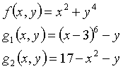
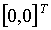

Quick Introduction to
Optimization
Shell "Inverse"
By Igor Gresovnik, June 1999
VERSION 1
Inverse: Basic Information
Inverse is a general-purpose programme shell for solving optimization and inverse problems in conjunction with a simulation programme. Problems solved by Inverse can usually be formulated as constraint minimization problems of the form
The simulation programme is used for evaluation of response of the system in question. This is a part of evaluation of the objective (f) and constraint functions (gi) and their derivatives, if needed. The shell performs optimization algorithms and controls execution of the analysis programme.
Problem definition: User defines the problem in the shell command file. Shell interpreter interprets this file and executes its commands (functions) one by one. Each interpreter function invokes its corresponding shell function (scheme on the right). Shell functions are arranged in modules by their purpose. Modules provide a variety of optimization tools and tools for solution of individual sub-problems that can arise, e.g. optimization algorithms, interfacing utilities, basic matrix operations, variable manipulation, etc.
Syntax of interpreter commands is simple:
command { arguments } command { arguments }...
Structure of argument blocks in curly brackets depends on the function. A special sub-system, the expression evaluator (or calculator) evaluates mathematical expressions, which can appear in argument blocks. A set of interpreter functions enables flow control by implementing branches and loops. A system of user defined variables of different types (vectors, matrices, files, etc.) enable data storage and exchange.
Command file usually consists of three parts. Initialization part includes additional definitions and data initialization. Analysis block defines the direct analysis, i.e. evaluation of optimization and constraint functions and their derivatives at a specific set of parameters. Action part includes commands that generate results. This includes running of optimization algorithms, test analyses and other tests like tabulation and numerical derivation tests.
Analysis block is argument block of the analysis
command. It contains definition of direct analysis and is executed
(i.e.
interpreted) every time direct analysis is performed, typically on
algorithm
request. A built-in analysis function performs direct analyses and
takes
care of data transfer between algorithms and analysis definition. This
is implemented through shell variables with pre-defined meaning.
Basic Modules
Optimization module includes optimization algorithms and other tools (e.g. tabulating utilities, support for Monte Carlo simulations, etc.). It also includes utilities for definition of direct analysis, including organization of data transfer between analysis definition and optimization algorithms.
File interpreter represents shell user interface.
Expression evaluator (calculator) evaluates mathematical expressions, which appear in argument blocks of file interpreter functions.
Variable handling module includes basic operations on variables like creation and deleting, copying, initialization, etc.
Flow control module includes implementation of branches and loops, a function definition utility, and some other flow control utilities.
Syntax checker enables checking command file syntax before running it. Some troublesome errors like parenthesis mismatches are easily discovered by this tool. Arguments are also checked for some basic interpreter commands (e.g. for flow control commands).
Debugger allows step-by-step execution of commands, execution of arbitrary portions of code, checking and changing values of variables in the middle of execution, etc. This can be a valuable tool for error location and dismiss.
General file interface provides a set of functions for interfacing simulation and other programmes.
Interfacing modules provide tools for interfacing specific simulation programmes, which includes execution control and data exchange functions. An interface with a finite element programme Elfen has been implemented.
Miscellaneous utilities module includes various
auxiliary
utilities, for example utilities for interaction with the operating
system.
This module is poor at the moment and will be extended in the future.
File Interpreter
File interpreter represents shell user interface. User defines the problem in the command file, which is interpreted by the interpreter when the shell is run. The command file name must be given as command-line argument at its invocation, e.g.
inverse test.cm
if inverse is programme name and test.cm is command file name.
Syntax: File interpreter searches for commands (functions) and invokes shell functions, which correspond to them. Each command is followed by curly brackets, which contain its arguments. Commands and their arguments can be separated by spaces, newlines, or tabs:
command1{arg1 arg2 ?} command2{arg1 arg2 ? }
An important syntax rule is that all brackets must match (i.e. each bracket must be closed within the first enclosing bracket) no matter where they occur and what their function is. Function and variable names are case sensitive.
Flow Control:
If branch:
if { ( condition ) [ block1 ] else [ block2 ]}
- code block block1 is interpreted (executed) if value of expression condition is not zero. If it is zero and block2 is given, that block is is interpreted (block2 is optional). Expression condition is evaluated in expression evaluator.
While loop:
while { ( condition ) [ block ] }
- code block block is repetitively executed while termination condition condition evaluates to a non-zero value. When condition becomes zero, block is not executed any more.
Do loop:
do { [ block ] while { condition } }
- executes code block block until the value of expression condition becomes zero. Differently from while loop, block is executed at least once because the termination condition is tested after its execution.
Example:
={i:1}
while{(i<=5)[ write{$i \n} ={i:i+1} ]}
-this code prints numbers from 1 to 5 separated by newlines on standard output.
Interpretation of another file:
interpret { filename }
- file named filename is interpreted. Interpretation then continues after this command.
Exiting interpretation of the current code block:
exit { < numlevels > }
- interpretation of the current code block stops, interpretation continues numlevels interpretation levels lower. Interpretation level increases by one every time a new code block is interpreted (e.g. in loops) and decreases back when interpretation of that block stops. numlevels is an optional numerical argument. If it is absent, all interpretation levels exit and interpretation stops.
Definition of new interpreter functions:
function { funcname ( < arg1 arg2 ? > ) [ defblock ] }
- defines a new interpreter function named funcname. arg1, arg2, etc. are formal argument names. defblock is a definition block, which is interpreted every time so defined function is called. Marks that denote function arguments can appear in this block. They are replaced (literally as strings) by actual arguments before defblock is interpreted. Marks are of the form
#argname
where argname is a formal argument name as it appears in round brackets of function definition.
When function is called, actual arguments must be specified in its argument block (within curly brackets following function name) in the same order as the corresponding formal arguments are stated in function definition, separated by blank characters (spaces, tabs, newlines). If a specific argument includes blank characters, it must be contained in curly brackets which are omitted when the argument replaces the corresponding argument mark in function definition:
funcname { act_arg_1 {act arg 2} ? }
Arguments can be referred to in defblock by sequential numbers instead of formal names. In this case the corresponding marks must be included in the argument block of the update function and are of the form:
update { code ? #{ expr } ? code }
Value of expression expr represents a sequential number of actual arguments at function call. Function update evaluates such expressions, replaces argument marks by the corresponding actual arguments, and interprets its argument block. This can be used for definition of functions that take variable number of arguments. Calculator function numargs, which returns number of arguments passed at function call, is useful in this case.
Example: implementation of for loop
function { for ( begin condition end body )
[
#begin
while { ( #condition )
[
#body
#end
] }
] }
The following code then prints numbers from 1 to 5 to the standard output:
for { ={i:1} i<=5 ={i:i+1}
{ write { $i "\n" } }
}
Note that the last argument (write { $i "\n" }) must be in curly brackets because it contains spaces. The for function definition block is actually interpreted, which after replacement of argument marks by actual arguments looks like this:
={i:1}
while { ( i<=5 )
[
write { $i "\n" }
={i:i+1}
] }
Comment:
* { This is a comment. }
- this function does nothing; it enables comments between commands.
Function Arguments:
Function arguments must be separated by blank characters (spaces, tabs, newlines) or commas.
String arguments may or may not be included in double quotes (must be if they contain blank characters). Special characters can be represented by escape sequences (\ followed by the corresponding character). Example:
write { "This output include newlines\n\n" } }
Numerical arguments can be given as decimal numbers or as calculator variables or expression. In this case variables or expressions are evaluated and replaced by their values. Numerical arguments specified by calculator variables have the form
$ varname
while arguments specified by expressions have the form
$ { expression }
Mathematical expressions are specified in usual way, e.g.
3*sin[5/(2+0.5*x)^(3/2)]
Shell variables are specified by their names. Variable elements are specified by variable names followed by their indices in square brackets, which specify their position in the variable element table:
varname [ ind1 ind2 ? ]
Indices are numerical arguments for which the above rules apply. For variables of zero rank there are no indices since they contain only one element of a specific type, and square brackets can also be omitted. In the same form as individual elements, variable element sub-tables are specified.
Objects of various types (e.g. matrices, vectors, files, scalars, etc.) have their own rules of representation (see "Shell Variables"). Instead stating their contents, these objects can be represented by specification of a variable element of a given type in the following form:
#varname[index1 index2 ? ]
A copy of the appropriate variable element is used in this case.
Expression Evaluator
Expression evaluator or calculator evaluates mathematical expressions, which appear in argument blocks of interpreter functions. It contains a set of built-in functions and binary operators, which can be arbitrarily combined with variables and numbers to form expressions. Spaces and newness between entities that form expressions are ignored. Function arguments must be listed in square brackets and separated by commas. Names are case sensitive. Calculator variables differ from shell variables.
File interpreter functions = and $ are used for interaction with the calculator: Function = assigns a value to a calculator variable and creates it if necessary:
= { varname: expression }
The current value of expression is assigned to a calculator variable named varname.
Function $ defines a calculator variable by a mathematical expression or defines a new expression evaluator function. The variable or function is created if it has not been existed yet:
$ { varname: expression }
- the expression itself is assigned to the variable named varname rather than its value.
$ { funcname [ arg1, arg2, ? ] : expr }
- this defines a new calculator function named funcname. arg1, arg2, etc. are formal argument names and expr is the mathematical expression that defines how function is evaluated. This expression can contain variables named as formal arguments, which are replaced by actual arguments at function evaluation. Arguments must be separated by commas. For example, with the following definition:
${ cubesum [x,y] : (x+y)^3 }
a new calculator function of two variables cubesum is defined and it evaluates to the third power of sum of its arguments, e.g. cubesum[1,2] evlauates to 27.
Mathematical expressions are used as conditions in branching and looping functions, for representation of numerical arguments to file interpreter functions, and for other purposes. In principle every numerical argument can be replaced by an expression evaluator variable in the form
$ varname
or by an expression in the form
$ { expression }
Definition of expression evaluator functions using file interpreter:
definefunction { funcname [ defblock ] }
- defines a new calculator function named funcname. Block defblock is interpreted at every evaluation of this function. User must define the return value in this block using the return function, which requires one argument - a mathematical expression whose value will be returned by the newly defined function. The user can access values of actual arguments at function call by calculator function argument, which takes as argument the ordinary number of the required argument and returns its value. Another calculator function numargs returns the number of arguments passed at function call. This function enables definition of functions with variable number of arguments.
Example: Definition of a calculator function that returns sum of its arguments:
definefunction { Sumation
[
={retsum:0}
={indsum:1}
while { (indsum<=numargs[ ])}
[
={retsum: retsum+argument[indsum] }
={indsum: indsum+1 }
] }
return{retsum}
] }
After this definition, expression "Sumation[
3,14,2 ]" will evaluate to 19, for example.
Variables
Shell variables can hold objects (elements) of different types - options, counters, scalars (decimal numbers), vectors, matrices, fields, files, and strings. Their function is data storage, data exchange between different functions, and support to specific operations like matrix operations, domain transformation or file operations.
Each variable can hold a multidimensional table of elements of a specific type (see the figure below). Number of dimensions of this table is called variable rank. Variables of rank zero can hold a single object.
For each type of variables there exists a set of operations for their manipulation, e.g. copying, moving, deleting, creation, initialization, etc.
Example: Matrix Variables
Let us create a matrix variable m with a 3*2*3-dimensional element table (18 elements) and initialize the 1-2-2-th element to
This is done by commands newmatrix and setmatrix:
newmatrix { m [ 3 2 3 ] }
setmatrix{ m [ 1 2 2 ]
2 3 { { 1: 1.1 1.2 1.3 }{ 2: 2.1 2.2 2.3 } } }
The first command creates a matrix variable m with a 3*2*3 element table, and the second command creates its 1-2-2-th element set to the 2*3 matrix above. After these commands variable m looks like in figure below:
If rank of matrix variable was zero, it would not be necessary to execute the newmatrix command, since setmatrix would create the variable itself. Square brackets following matrix name would not be necessary since there would not be any indices (although placing empty square brackets is also valid).
Matrices can be stated in different forms. The above matrix could be specified in the following ways:
2 3 { { 1 1: 1.1 } { 1 2: 1.2 } { 1 3: 1.3 } { 2 1: 2.1 } { 2 2: 2.2 } { 2 3: 2.3 } }or
2 3 { { 1.1 1.2 1.3 2.1 2.2 2.3 } }
If we just want to create a matrix with a given number of rows and columns without specifying components, only dimensions can be given followed by empty curly brackets, e.g.
2 3 { }
If a matrix already exists, we can specify arbitrary number of its components without dimensions, e.g.
{ { 1 1: 1.1 } { 2 2: 2.2 } { 2 3: 2.3 } }
We can also point to an existent matrix element instead of specifying matrix contents, in this case a copy of that element is created:
# { mat1 [4 1] }
A number of other functions enable manipulation of matrix variables. Some of them can operate on sub-tables of elements, e.g. copymatrix, which copies matrices from one element sub-table to the corresponding elements of another sub-table. Functions that operate on whole variables have the suffix "var", e.g. deletematrixvar.
Individual matrix components can be accessed by the expression evaluator function getmatrix. For example, getmatrix ["m",2,1,1,2,2] refers to the second row and the first column of matrix element 1-2-2 of matrix variable m, and evaluates to 2.1 if m is defined as in the figure. The first argument is variable name in double quotes, the second one is row number, the third one is column number, and the rest are indices of matrix element in variable element table. Dimensions of the variable element table can be obtained by the getmatrixdim function, e.g. getmatrixdim ["m",2] evaluates to the second dimension of the matrix variable element table, which is 2. If the second argument of getmatrixdim is 0, variable rank is returned.
Other variable types have similar interpreter and calculator manipulation functions than matrices. Their names are derived simply by replacing the string "matrix" by the appropriate type name, e.g. "scalar", "vector", "field", "file", etc. For example, copyscalar copies element sub-tables of scalar variables.
scalars are specified simply as numbers, fields are specified in the same way as matrices and vectors are specified in a similar form. For example, a zero rank vector variable v containing vector
can be created like this:
setvector { v 3 { 1.1 2.2 3.3 } } or
setvector{ v 3 { {1:1.1} {2:2.2} {3:3.3} } }
As is the case with matrices, only dimensions or individual components can be specified. We can use this to set components of vectors, matrices or fields according to some rule. For example, we can create a 100-dimensional vector variable v1 with components 1.01, 2.02, 3.03, ?, 101, like this:
setvector { v1 100 { } }
= { j: 1 }
while { (j<=100) [
setvector{ v1 {{ $ j: $ { j+0.01*j } } } }
= { j: j+1 }
]}
We exploited the possibility of replacing numbers by expression evaluator variables and mathematical expressions.
File variables deserve some additional attention. They carry file objects, which are logical representations of files on the computer file system. File manipulation functions (like functions of the general file interface) operate on such variables. In order to use these functions, file objects must be connected to files and files must be open. We can create a file object, connect it with an actual file, and open the file with function setfile, e.g.
setfile { outfile test.ct ab+ }
A file variable named outfile is created and its only element is connected with the file "test.ct", which is opened at the same time. "a+" is the mode in which the file is open and can usually be omitted. In this case the shell determines opening mode. Basic modes are "w" (file open for writing), "r" (open for reading), "a" (open for appending), each of which can have suffices "b" (binary mode -does not have effect on Unix systems) and/or "+" (file open for both reading and writing).
File variables are destroyed and the corresponding files closed by the deletefilevar function, e.g.:
deletefilevar { outfile }
Four file variables have a pre-defined meaning, which are infile
(shell input file), outfile (shell output
file - function fwrite writes to
this
file), aninfile (simulation input file)
and
anoutfile
(simulation output file).
Shell Output
Function write is a basic output function of the shell. It prints to the programme standard output (usually a terminal window), but has equivalents fwrite that prints to the shell output file (outfile) and dwrite that prints both to the standard output and the shell output file.
Function simply prints its arguments one by one. Arguments can be strings in double quotes, e.g.
"Normal termination.\n"
special character sequences, e.g.
\n
expression evaluator variables, e.g.
$ a1
or mathematical expressions, e.g.
$ {a+3*sin[getvector["parammom",2]]}
Strings are output directly. They can eventually include special character sequences, which are replaced by the appropriate characters before the string is printed (e.g. \n in the example above is replaced by the newline character). Brackets that appear in strings must be stated by escape sequences if they are not closed, because of the file interpreter rule that all brackets must be closed no matter where they occur.
Special character sequences are replaced by the appropriate special characters and then printed. The most often used are \q for single quote ('), \Q or \d for double quote ("), \\ for backslash (\), \n for newline character, \r for carriage return, \t for tab character, \< or \5 for {, \> or \6 for }, \1 for (, \2 for ), \3 for [, \4 for ].
Mathematical expressions and calculator variables are evaluated by the expression evaluator and their values are printed. Variables are stated by the $ sign followed by variable name, while expressions are stated by the $ sign followed by curly brackets containing the expression.
Expression evaluator functions for accessing contents of shell variables can be used in expressions. The write function and its equivalents can therefore be used to output any information available at a specific moment in a desired format.
Example:
Write{ \n\n $i "th parameter: "
${getvector["parammom",i]} ".\n" }
For each type of variable there exist functions, which their contents. Typically there are two basic output functions for each type of variable, one that outputs contents of the whole variable and one that outputs individual elements or sub-tables of elements. For example, for matrix variable that contains 2*3 matrix elements,
printmatrixvar { m1 }
prints the whole matrix variable, which include information about element table dimensions and contents of individual matrix elements, while
printmatrix { m1 [2] }
prints the contents of three matrices contained in variable sub-table m1 [2], i.e. matrices m1 [2,1], m1 [2,2] and m1 [2,3]. Command
printmatrix { m1 [2 1] }
would print only one matrix since sub-table specification m1 [2 1] specifies a single element.
Equivalent functions exist for other types of variables. Their names
are derived by replacing parts of the above function names that are not
underlined by the appropriate variable types (e.g. scalar, vector,
file,
etc.). Functions stated above print to the programme standard output.
Their
equivalents whose names are derived by adding a prefix f,
e.g. fprintmatrixvar, print
to the shell output file (outfile)
Expression Evaluator
Syntax checker checks the command file for syntax errors and reports them. Identification of errors is limited; especially function arguments are not checked for all functions. This is partially a consequence of the interpreter concept itself since the meaning of arguments is many times known only during the runtime. Checking arguments for all commands would also require a tremendous overhead in the code, which would be hard to justify by the gained benefit. However, the syntax checker can discover some frequent and problematic errors like parenthesis mismatches and function names misspellings. The checker is run by
inverse test.cm -c
if inverse is the programme (optimization shell) name and test.cm is the name of the command file. Option -c activates the checker.
Debugger is used for tracing code execution and facilitates error location. It allows step-by-step execution of arbitrary portions of code, checking and changing variable values in the middle of execution, etc. It is run e.g. by
inverse test.cm -d
Option -c activates the debugger.
Debugger Commands
q finishes the debugging process.
s executes the next file interpreter?s command.
S executes the next file interpreter?s command; commands that execute code blocks are executed as single commands.
n num. executes the next num commands.
N num executes the next num commands; functions that contain code blocks are executed as single commands.
x num executes the code until num levels lower lever of execution is reached. Default value for num is 1.
c executes the code until the next active break command is reached.
ab id activates all breaks with the identification number id ("*" means all identification numbers).
sb id suspends all breaks with the identification number id ("*" means all identification numbers).
pb prints information about active breaks.
tb id prints status of breaks with identification number id.
v shift prints a segment of code around the current viewing position shifted for shift lines.
vr shift prints a segment of code around the line of interpretation shifted for shift lines.
va linenum prints a segment of code in the interpreted file around the line linenum.
nv num1 num2 sets the number of printed lines before and after the centerline when the code is viewed.
e expr evaluates the expression expr by the expression evaluator. If expr is not specified the user can input expression in several lines, ending with an empty line.
w expr adds expression expr to the watch table. Without the argument, values of all expressions in the watch table are printed.
dw num removes the expression with serial number num from the watch table.
aw switch with switch equal to zero turns automatic watching off; otherwise it turns it on.
pw prints all expressions in the watch table.
r comblock interprets comblock by the file interpreter. If comblock is not specified the user can input commands in several lines, ending with an empty line.
rd comblock does the same as r, except that the code is also debugged.
rf filename sets the name of the file into which the user?s commands will be written, to filename.
Breaks are set in the command file by function break, whose argument (optional) is break identification number, e.g.
break {
3 }
Variables with Pre-defined Meaning
Variables with pre-defined meaning are variables designed for carrying specific data relevant for optimization. Some interpreter and calculator functions operate on specific variables with a pre-defined meaning, which therefore do not need to be specified as arguments. For example, there is a set of interfacing functions that operate only on a file variable infile, which have a function of general input file.
Of specific importance are variables that are responsible for data transfer between user definition of direct analysis (analysis block of the command file) and optimization algorithms. The table below lists these variables:
|
Variable name [ element table dim. ] ( element dim. ) |
Meaning |
|
Scalar variables |
|
| objectivemom [] < [numobjectives] > | Value(s) of the objective function(s) at the current parameter values. |
| constraintmom [numconstraints] | Values of the constraint functions at the current parameter values. |
|
|
|
| parammom [] (numparam) | Current vaules of parameters. |
| measmom [] (nummeas) | Current values of simulated measurements. |
| gradobjectivemom [] < [numobjectives] > (numparam) | Gradient of objective function(s) at the current parameter vlues |
| gradconstraintmom [numconstraints] (numparm) | Gradients of constraint functions at the current parameter values. |
| gradmeasmom [nummeas] (numparam) | Gradients of the simulated measurements at the current parameter values. |
|
|
|
| der2objectivemom [] < [numobjectives] > (numparam,numparam) | Second derivatives (Hessian) of the objective function(s) at the current parameter values. |
| der2constraintmom [numconstraints] (numparam,numparam) | Second derivatives (Hessian) of the constraint functions at the current parameter values. |
| der2measmom [nummeas] (numparam,numparam) | Second derivatives (Hessian) of the simulated measurements at the current parameter values. |
Within the analysis block user must assign values to those of the above listed variables that are needed by the optimization algorithm. In this block the user defines the direct analysis, i.e. the way in which these variables are evaluated at current parameter values. These reside in the vector parammom when the analysis block is interpreted. If, for example, we have a constraint optimization problem and run an algorithm that requires the first derivatives, variables objectivemom, constraintmom, gradobjectivemom and gradconstraintmom must be calculated and set within the analysis block.
Each of the above variables has beside the current also its initial and optimal variant. The name of the initial variant is obtained by replacing suffix "mom" by "0" while the optimal variant is obtained by replacing the suffix with "opt". Optimal variants are used by some algorithms for storing results, while the initial variants are currently not used.
In the above table, dimensions of variable element tables are stated in square brackets while dimensions of individual elements (i.e. vectors or matrices) are stated in round brackets. These are problem characteristic dimensions whose meaning is the following:
|
|
|
| numparam | Number of optimization parameters |
| numconstraints | Number of constraint functions |
| numobjectives | Number of objective functions (usually equals 1) |
| nummeas | Number of measurements (applicable for inverse problems) |
The above listed dimensions are not stored in shell user defined variables, but have a special storage. Each of them is accessed by its own expression evaluator function, the name of which is the dimension name with prefix "get", e.g. getnumparam [ ] returns number of optimization parameters. These dimensions are set when a pre-defined variable or its element, for which a specific dimension is relevant, is created. For example, the command
setvector { gradconstraintmom [2] 3 { } }
will set numparam to 3 and numconstraints to 2. There is also an inverse effect on the setvector function: if for example numparam is 4, we do not need to state this dimension when we create related pre-defined variables and their elements (vector parammom, for example):
setvector { parammom { 1.1 2.2 3.3 4.4 } }
For inverse problems, there are two more pre-defined variables used for storing input data for an inverse analysis, i.e. measurements and their deviations:
|
|
|
| meas [] (nummeas) | Vector of experimental measurements. |
| sigma [] (nummeas) | Vector of measurement errors. |
A Short Example
Let us solve the following two-dimensional constraint optimization problem:
,
which implies that the objective and the two constraint functions are

The shell run with the following command file solves the problem:
pre-defined file interpreter function
user-defined file interpreter function
expression evaluator (calculator) expression
user-defined calculator function or variable
pre-defined calculator functions
calculator function defined via definefunction
user-defined shell variable
shell variable with a pre-defined meaning
character
or string with special meaning
With the setfile command in line 1 we create the shell output file outfile where functions will write their reports and error reports, and connect it with the file "quick.ct".
Lines 3 to 14 contain some preliminary definitions of new expression evaluator functions, which will be used later in the analysis block. Namely these are the objective (line 3) and both constraint functions (lines 4 and 5), derivatives of the objective function with respect to the first (line 7) and the second (line 8) parameter, and derivatives of the first (lines 10 and 11) and the second (lines 13 and 14) constraint function with respect to both parameters. Note that x and y are just names of function arguments that refer to the first and the second optimization parameters, and can be chosen arbitrarily.
In lines 15 to 16 we create variables with pre-defined meaning parammom, objectivemom and constraintmom. The aim of this is merely to specify the relevant characteristic dimensions of the problem. These are stored in internal variables of the shell and are used when creating pre-defined variables, whose dimensions are by definition equal to these characteristic dimensions. By creating vector parammom, number of parameters numparam is defined, by creating scalar objectivemom number of objective functions numobjectives is defined and by creating scalar variable constraintmom number of constraints numconstraints is defined. Note that no values are assigned to these variables. The same effect as creating parammom would have for example creating paramopt, and creating vector gradconstraintmom could replace both creating vector parammom and scalar constraintmom, since both numconstraints and numparam are relevant for this variable.
Lines 20 to 33 form the analysis block, which is user definition of the direct analysis and is interpreted at every analysis run. This block specifies how relevant quantities like objective and constraint functions and their derivatives are evaluated at a specific set of optimization parameters.
In lines 20 and 21 current values of parameters are stored in expression evaluator variables x and y. These values are obtained from vector parammom where they are stored by the algorithm that requested execution of a direct analysis.
In lines 22 to 33 the relevant quantities are evaluated and stored into the appropriate pre-defined variables where the requesting algorithm can obtain them. Value of the objective function is stored into scalar objectivemom (line 22) its gradient is stored into vector gradobjectivemom (lines 23 to 25), values of the constraint functions are stored into scalar variable constraintmom (lines 26 and 30), and their gradients to vector variable gradconstraintmom (lines 27 to 29 and 31 to 33) Auxiliary functions that were defined in lines 3 to 14 of the initialization part are used, called with the current parameters x and y. In more realistic case this part would include running some numerical simulation at the current parameters, the necessary interfacing with the simulation programme (for updating simulation parameters and reading results) and possibly some housekeeping for deriving final values from the simulation results.
A test analysis at parameters  is run in line 36 by the analyse function. This function takes parameter values from vector parammom; therefore this vector is set in line 35.
Finally, the problem is solved using function fsqp1, which runs the feasible sequential quadratic programming optimization algorithm (lines 37 to 41). This function requires nine numerical arguments, namely number of objective functions, number of non-linear inequality constraints, number of linear inequality constraints, number of non-linear equality constraints, number of linear equality constraints, final norm requirement for the Newton direction, maximum allowed violation of nonlinear equality constraints at an optimal point, the maximum number of iterations, and information whether gradients are provided, and three vector arguments, namely initial guess and lower and upper parameter bounds.
Let?s say that the above command file has been saved as "quick.cm" and that the shell programme is named "inverse". We can run the file by
inverse quick.cm
which solves the problem. The report including final results can
then
be checked in the file "quick.ct".
Further Information & Support
Inverse mail:
igor@c3m.si
Inverse R&Dhome page:
http://www.c3m.si/inverse/
Unframed version of this page:
http://www.c3m.si/inverse/invhome.html
Documents related to Inverse:
http://www.c3m.si/inverse/doc/
Inverse manuals (on-line & downloadable):
http://www.c3m.si/inverse/doc/man/
Examples:
http://www.c3m.si/inverse/examples/